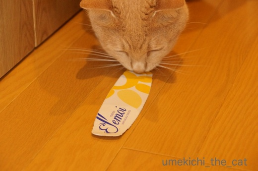
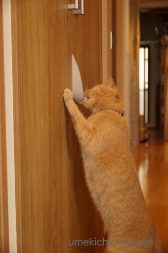
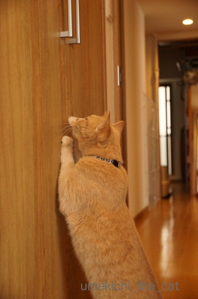
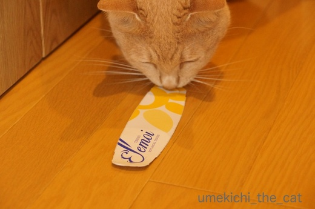
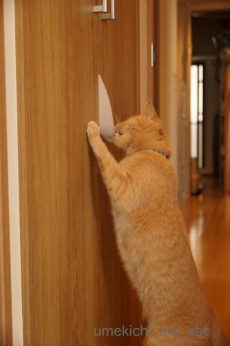
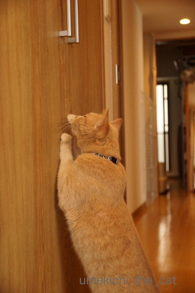

おもちゃじゃないおもちゃ２ [梅吉]
ながーいフォークはどこのおうちにでもあるものではありませんが
これならどこのおうちにもある。
たとえ今はなくてもそのうち必ず手に入るはず。

ティッシュボックスのフタ部分！

観音開きの扉の隙間にセットすると、狙ってます狙ってます！

あむっ！として

ゲットー！！

![[猫]](https://blog.ss-blog.jp/_images_e/101.gif) わし やった
わし やった![[手（チョキ）]](https://blog.ss-blog.jp/_images_e/87.gif)

挟んでは落とし、挟んでは落としの無限ループ。
最後は付き合いきれなくて飼い主がギブアップです(^▽^;)
催促するように扉をひっかく梅吉さんw

たのしー♪♬
皆様も試してみてはいかがでしょうか＾＾
 ↑ガブッと一押し↑
↑ガブッと一押し↑
プルプルと触れ合った後は写真撮影です。
（以降のバラは私の撮影です）
イングリッシュガーデンスタイルのバラ園。
とっても広くて野趣あふれる佇まい。（ほったらかしの箇所があるともいう）
池があったり水車があったり写真を撮るには楽しい場所です。
なにより人がうじゃうじゃいないところが良い！！
雨上がりの空にバラが映えます。
あまり見かけない色合いのバラ。
くすんでいるわけではありませんよ＾＾
写真は撮りませんでしたが以前行った植物園にはバタースコッチというバラがありました。
いわゆるバタースコッチキャンディの色。
白でもクリーム色でもなく微妙な色合いでしたよ。
「このバラ、黄ばんでる？？？」と思っちゃいました (⌒_⌒;
ちょっと変わった這い性のバラ「須磨」という名前でした。
このアングルだと地を這うように生えているのがわかるでしょうか。
もう一種、写真は撮らなかったのですが「安曇野」という小ぶりな可愛らしいバラがありました。
どちらも小野寺透さんというアマチュアのバラ育種家の方の作った品種。
ちょっと調べてみるとこの方「のぞみ」という
一重の可憐なバラを作った方でもありました。
大輪のゴージャズなバラも好きですが小ぶりで可憐なバラに目がいくこの頃です＾＾
小野寺さんGJ！！
これならどこのおうちにもある。
たとえ今はなくてもそのうち必ず手に入るはず。

ティッシュボックスのフタ部分！

観音開きの扉の隙間にセットすると、狙ってます狙ってます！

あむっ！として

ゲットー！！


挟んでは落とし、挟んでは落としの無限ループ。
最後は付き合いきれなくて飼い主がギブアップです(^▽^;)
催促するように扉をひっかく梅吉さんw

皆様も試してみてはいかがでしょうか＾＾
プルプルと触れ合った後は写真撮影です。
（以降のバラは私の撮影です）
イングリッシュガーデンスタイルのバラ園。
とっても広くて野趣あふれる佇まい。（ほったらかしの箇所があるともいう）
池があったり水車があったり写真を撮るには楽しい場所です。
なにより人がうじゃうじゃいないところが良い！！
雨上がりの空にバラが映えます。
あまり見かけない色合いのバラ。
くすんでいるわけではありませんよ＾＾
写真は撮りませんでしたが以前行った植物園にはバタースコッチというバラがありました。
いわゆるバタースコッチキャンディの色。
白でもクリーム色でもなく微妙な色合いでしたよ。
「このバラ、黄ばんでる？？？」と思っちゃいました (⌒_⌒;
ちょっと変わった這い性のバラ「須磨」という名前でした。
このアングルだと地を這うように生えているのがわかるでしょうか。
もう一種、写真は撮らなかったのですが「安曇野」という小ぶりな可愛らしいバラがありました。
どちらも小野寺透さんというアマチュアのバラ育種家の方の作った品種。
ちょっと調べてみるとこの方「のぞみ」という
一重の可憐なバラを作った方でもありました。
大輪のゴージャズなバラも好きですが小ぶりで可憐なバラに目がいくこの頃です＾＾
小野寺さんGJ！！

カフェオレ色の梅吉

梅吉 2023年8月10日 永眠


梅吉と出会った譲渡会

犬猫の理由なき殺処分ゼロ
妄想広告
UMEKICHI 光

爆発的に早い！
時々攻撃的！
Thanks to Mr.Boss365
爆発的に早い！
時々攻撃的！
Thanks to Mr.Boss365

おはようございます。
梅吉くん頭いいぞ！！GIFも良い感じです！！
太っているから、最近は出来ないだにゃ！？by すもも(=^･ｪ･^=)
散歩・散策には良さそうなバラ園ですね！！
バタースコッチキャンディの色は不思議な色ですね！！（⌒ー⌒）
by Boss365 (2018-05-24 10:58)
釣られたくせに、催促して逆にギブアップに追い込むなんて、
梅吉様は、やはり端倪すべからざる猫さんﾋｨｨｨｨｨｨｨｨ(ﾟﾛﾟ;ﾉ)ﾉ
ついに撮影者が誰か断らなきゃならない事態なのかしら^_^;
須磨、安曇野、のぞみというネーミングが素敵です(〃'∇'〃)
by middrinn (2018-05-24 11:26)
ティッシュボックスのふたの部分でさえも
ちょっと工夫すれば遊んでくれるんですねぇ(^O^)
梅吉さん、のび～ってして上手にＧＥＴしますねぇ(^-^)
う～ん、うちのにゃんずだと・・・ガールズはのってくれるけど
扉が傷つきまくりそうだし、大御所はきっと
ひたすら落ちてくるのを寝て待ちそう^^;
by ニッキー (2018-05-24 12:30)
これは良いオモチャになります！
うみはこの小さなフタの上でころころ転がるのが好きなの。
でも今度扉の隙間に挟んでみよう^m^
人間の方が飽きるのわかるわー。猫は飽きっぽいと言うけど、案外しつこいのよね。
by リュカ (2018-05-24 14:27)
あら♪ 安上がりなおもちゃ♪
いろいろな遊び方を見つける天才ですね(#^.^#)
我が家も先ほど・・・ありましたが
見つかる前に捨ててしまいました！！惜しい！！
ってＬｅａだとすぐにボロボロになりそうです(;^_^A
by きぃ (2018-05-24 15:18)
GIFの梅吉さんのお目目がキラン!と光るところがむちゃくちゃかわよいっ!!
くすんだ色のバラは結構好きですが、地面に生えてる方は私にはバラだと分からないと思います。
by zombiekong (2018-05-24 15:29)
根負けしてしまったんですね(^^;)
いろんな物がオモチャになるんですね。こんどちょうちゃんと遊んでみようかな。
先日行ったバラ園は残念ながらまだ見頃ではなく残念でしたが、良い写真を見せて頂き嬉しいです(^o^)
by kou (2018-05-24 15:50)
梅吉さん遊ぶのに夢中になっちゃっていますね！
何回もリクエストでしたか(^^)
by ma2ma2 (2018-05-24 17:27)
おお、ナノで試してみます!!きなこは食いつくの必至ですな(^.^)
by palpal (2018-05-24 20:45)
ティッシュボックスの蓋で、楽しい遊びができるのですね。
面白い遊び、誰が思いついたのでしょう？（笑）
天才ですね。
どこまで届くのか、記録挑戦の一人オリンピックができそうです。
下僕殿は途中で諦めたらあかへんで〜（笑）
by kiki (2018-05-24 21:00)
おおお。ティッシュの蓋の遊び
よく発見されましたね！
梅吉さんも楽しそう。^^)
by yes_hama (2018-05-24 21:45)
梅吉さん、お見事！
パッと写真を見たとき、小さなサーフボードかと思いました(^▽^;)
扉の隙間からのチョロ出しはニャンコ心をくすぐりますよね♪
我が家ではレジ袋の端っこが引き出しからはみ出していたりするともう大変。きちんと仕舞わない私が悪い、はい、その通りです^^;
野趣あふれるってステキな表現。ウチのリビングにも適用できそうです。
by ゆきち (2018-05-25 00:23)
なんと経済的なお遊び♪（*´∀｀*）
飽きないんですね、すごいですね・・・（お目目黒々！）
バラきれいですね。たわわなやつもバラなのですね。
英国庭園ぽくもあり、モネ庭ぽくもあり、そして和風でもある、スゴイ。(｡-_-｡)
by Ja-Kou66 (2018-05-25 00:46)
この遊び、良いですね。
でも、隙間が合わないと難しいかも？＾＾；
by ぽちの輔 (2018-05-25 06:16)
梅吉さん、楽しんでますね^^
by ニコニコファイト (2018-05-25 06:59)
安上がりなのはナイスですが、
無限ループなのですねー(^_^;)
お疲れ様ですー！！
by よーちゃん (2018-05-25 08:25)
わー、こんな遊び方があったんですねー♪
バラとイングリッシュガーデン・・・素敵。小さな旅をするよう。。。
by Ginger (2018-05-25 12:33)
ぐっふっふ・・
生きておりますよー
相変わらず、可愛いねー
by じゅらまろ (2018-05-25 17:21)
ちぃさんと梅吉さんは、何気ないところから
遊びを考えるのが上手ですねヽ(^o^)丿
これ、やってみよ～っと＾＾
あかりは、飽きっぽいんだけど、
すごいしつこい時があって、ニャンコとの遊びは
体力がいりますね＾＾；
by マーヤ (2018-05-26 01:18)
無限ループの梅吉さん、楽しそう〜(^o^)
買ったオモチャより、そこらのゴミのほうが
猫ごころをくすぐるのは、ナゼでしょうね(^_^;
這わせるバラって、珍しい〜
by のらん (2018-05-26 12:27)
これは面白い！！梅吉くん無限ループなんだ～。
そしてちぃさんはついていけずにギブアップｗわかる気がする。
我が家の賢いタラオくんもｗこれを覚えたら夢中になりそう。
そして私の寝床のまわりにティッシュケースのふたをせっせと運んできてくれるようになるのでしょう。
イングリッシュガーデンいいな～。
水辺の写真にうっとりしちゃった(*^-^*)もちろんバラも素敵だよ～♪
by emi (2018-05-26 14:20)
Boss365さん＞
ほんの少しだけ見えているだけでも
目ざとく見つけて飛びついていました。
チラリズムが猫様の心をくすぐるようで( ´艸｀)
すももさんには扉の下からチョロ出しして
寝たまま遊べるバージョンを
楽しんでいただきましょう(๑˃̵ᴗ˂̵)و
バタースコッチ色はイギリスの品種でした。
ガーデニング王国の方々は
ありきたりのバラでは満足できなくなっているのかもー。
middrinnさん＞
梅吉はほんとあきらめない、粘り強い子なんですよ＾＾
（しつこいとも言いますか(〃▽〃)）
私などその姿勢を見習わなくては、なんて思いますw
もしかして背中で教えてくれているのかしら！？
ニッキーさん＞
落ちて来るのを待つ、大御所様らしくて想像できますw
もし大御所様がノリノリになってみなにゃんにも攻められたら
扉は大変なことになっちゃいますねー。
うちも扉保護のため梅吉を遊ばせるのもほどほどにしなくっちゃ！
リュカさん＞
うみちゃんがヘソ天で転がるの想像できますー！！
うねうねして可愛いだろうなぁ♡
飽きる時は1秒で飽きる癖に気にいるとエンドレス・・・
もう止めようよーと言っても聞いちゃくれませんw
遊ぶの止めると部屋の隅から
じーっと咎めるような視線を送って来るよ (^▽^;)
きぃさん＞
ああ、Leaちゃんはガジガジすること確実ですね！
そうするとお掃除番長が（笑）忙しくなっちゃいますねー( ´艸｀)
ふと手にしたもの、とりあえず梅吉の鼻先に持っていくのが
癖になってきましたwww
zombiekongさん＞
真剣でお目目が真っ黒になっていますよねー＾＾
目に星も入るってものです☆
最近はくすんだ色のバラも人気のようですね。
ありきたりではない感じがオシャレっぽいのかな(^_－)☆
kouさん＞
気にいると延々と遊ぶのでこちらがギブアップです(^▽^;)
下僕としてまだまだ修行が足りないのかもー。
kouさんの地域はこれからバラが見頃になるのでしょうか。
日本って本当に広いですよね！！
ma2ma2さん＞
夢中になると本当に何度も何度もですw
時間のない時はうっかり誘えませんw
palpalさん＞
ナノくんはどんな反応するのかしらー。
「なにそれ」ってクールに見て終わりだったりしてw
kikiさん＞
猫が相手だと何がおもちゃになるか予想がつきません！
これはイケるはず！と思っても見向きもされなかったり(^▽^;)
この日は下僕失格でした・・・
梅吉って結構しつこいんですよー=͟͟͞͞ ( ꒪౪꒪)
yes_hamaさん＞
なんでも試して見るものですねー＾＾
今現在はすでに飽きたようですが（笑）
そのうちまた新鮮に喜んでくれるものと
期待しておりますw
ゆきちさん＞
あら♡お手軽な夏アイテムですね！
今度小脇に抱えてもらおうかしら・・・(*>艸<)
引き出しからはみ出している袋の端っこ、わかりますー！
夜中にキッチンでごそごそエンドレスな音が聞こえてきて
様子を見に行ったら
ロール状のビニール袋がほぼ全部引き出されていたことがあります(^▽^;)
まず笑って、その後己の至らなさを嘆きましたw
Ja-Kou66さん＞
真剣すぎてお目目キラ〜ン☆になってますよねー( ´艸｀)
この経済的なお遊びは現在お茶を引いておりますが
そのうちまた喜んでくれるもの、と思っていますw
公園、なんでもあり！なんですよー。
拡張していくうちにテーマがボケてきたんでしょうか・・・
まだまだ敷地があるので今後の展開に期待です。
（きっとますます混沌とするのでしょうwww）
ぽちの輔さん＞
これ、ウケているうちはとっても楽しいですよ＾＾
紙なのでちょっと角度をつけると割と広い隙間でも引っかかります。
ぽちの輔さんのおうちのみなにゃんで飛びかかったら
今度は紙を奪い合う別の遊びになりそうです( ´艸｀)
ニコニコファイトさん＞
楽しそうでしょう？Ｏ(≧▽≦)Ｏ
お目目キラキラで遊んでくれましたよ＾＾
よーちゃん
遊んでくれないよりは無限ループの方がよい？かな？？(^▽^;)
下僕としてしっかりお相手したいと思います＾＾
Gingerさん＞
物は試しでやってみるものですねー＾＾
喜んでくれて下僕としてはしてやったりでした！
無限ループのおまけつきではありましたがw
じゅらまろさん＞
だれ・・・？
なんてうそうそー！！(*>艸<)
じゅらまろさん、まろたんティマさん元気かな？って
思ってたところだったのでnice!＆コメント嬉しかったでーす＾＾
梅吉、ますますかっわいくなってますよ♡
マーヤさん＞
特大ビニール袋に籠城しているあかりちゃんに
ちょいちょいやっても喜んでもらえそう！！
飽きっぽい癖に妙にしつこい、うんうんうんうん・・・
根気と体力必要ですよねwww
のらんさん＞
楽しんでもらったのは何よりでしたが
最後は下僕の気力が尽きちゃいましたw
まだまだ修行がたりませんっ。。。
ゴミおもちゃ、まったくブログ映えしなくてアレなんですが・・・
まっ、いいやってupしちゃってます＾＾
emiさん＞
タラくんはお気に入りのものを運んでくるんだー！
目覚めたら周りにいろんなものが並んでいて
何かの儀式みたいだった、てよく聞きますw
楽しそー！！
梅吉はそれはしないのよね・・・
にゃんこそれぞれで面白いね(≧▽≦)
水辺、良い感じでしょう＾＾
もう少し手を入れたらモネの庭っぽくなりそうなんだけど
途中でやめちゃった感があるもの◎(^▽^;)
頑張りすぎてないところにホッとしましたー＾＾
by ちぃ (2018-05-26 16:15)
梅吉さん気合い入ってますね~。
感触？へらへらチラ見せ？
どのあたりがお気に召したのでしょう？
面白いです。
by ふにゃいの (2018-05-26 20:03)
ふにゃいのさん＞
チラ見せが琴線に触れるのでしょうか＾＾
それと梅吉は垂直に動くものを面白いと思うようですよ。
本にゃんもノリノリになると網戸の桟を垂直に駆け上がりますwww
by ちぃ (2018-05-27 16:23)